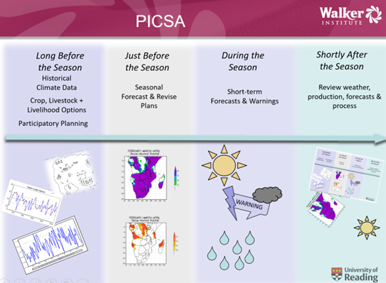
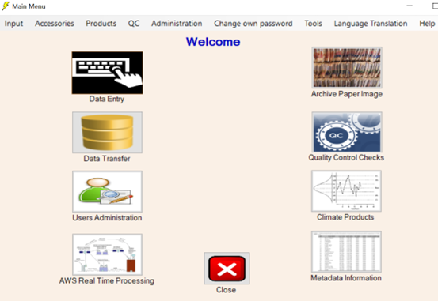

1 About this guide
1.1 Who is this guide for?
This guide is concerned with the analysis of climatic data. It is for four types of reader: The first is those concerned with the collection and subsequent use of their climatic data. This includes staff of national meteorological services, (NMSs) who are often the custodians of the historical climatic data for their country. There are many others who collect climatic data, for example schools and colleges, farms, agricultural institutes and many individuals.
Second is the users who need results from an analysis of historical climatic data. They may undertake analyses themselves, or, at least, need to know what is possible from the data. They are in many walks of life, including agriculture, health, flood prevention, water supply, renewable energy, building, tourism and insurance.
The other two groups are concerned more with teaching and learning statistics. Looking at climatic data is an application of interest to many people; partly because of the effects that climate has on many areas. Also because of the many issues of climate change.
So, the third group is those who teach statistics. This guide shows how simple statistical ideas are used in solving practical problems in one application area. The key concepts of sensible data handling are the same whatever the area of application.
The final group consists of those who have to learn statistics. Many people recognize that they need statistics skills for their work but sometimes find their statistics courses are difficult to relate to real-life applications. The materials here are complementary, by starting with the application and considering the statistical ideas that are needed to process the data.
These groups overlap. For example, many users of climatic data are also conscious of their need for further training in statistics.
1.2 Why is it needed?
Many organizations have devoted more effort to collecting climatic data than to their subsequent analysis. This is like other areas where monitoring data are collected routinely. One way that climatic data is perhaps different is that much of the data has an important immediate use. It is an input for the short-term forecasts and for other immediate monitoring of the current season. This might be termed a “spatial need” in that these applications benefit from lots of data from different places at the same time. These data are then stored, and this guide is for a “time series need”. Most of the analyses in this guide are for long records in time. They may be for one, or more, points in space.
Sometimes the excuse for the lack of analysis is that the quality of the data is suspect. This is not a good reason, because one way to improve data quality is to analyze the existing data to demonstrate their importance and shortcomings.
It is also useful if those who collect data can do their own analysis, or at least be involved in the analysis. This is highly motivating for staff and an excellent way to encourage good data quality.
Some familiarity with the use of software (under Windows) is assumed. Knowledge of statistics is useful, but not essential for most chapters. Indeed, though this guide cannot substitute for a conventional statistics book, users can learn many general ideas through seeing where different techniques are useful.
1.3 What software is used?
This guide uses the R Statistical system (R Core Team, 2018). It mainly uses R through a graphical user interface, called R-Instat. An earlier version of this guide (Stern, Rijks, Dale, & Knock, 2006) was for a simple statistics package, called Instat. Like the original Instat, R-Instat combines a general statistics package with a special additional menu to simplify the analysis of climatic data.
R-Instat is designed to support improved learning of statistics in general as well as providing a wide range of special dialogues to simplify, and hence facilitate, the analysis of climatic data.
1.4 What is in this guide?
Illustrations and ‘route maps’ are provided in all chapters for those who just wish to study particular topics. We hope that some users will enjoy the way the ideas unfold in successive chapters but do not assume that readers will wish to look at every chapter. Most chapters are in a “tutorial” style, so readers can follow, and practice at the same time. There is considerable repetition, to support users to “dip into” the chapters they need.
How much practice is needed, depends on the user’s current experience in statistical computing. Those who are relatively inexperienced, or have never used a statistics package, may be surprised at how easy the ideas and the software are. However, beginners need practice, so just reading the guide will not be so effective.
Those with experience of a statistics package should find that R-Instat is like many other statistics packages. Then practice is not so important, because they should be able to visualize the results from just reading the text.
We assume R-Instat has already been installed, see http://r-instat.org/index.html.
Chapters 2 and 3 provide practice of using R-Instat in general. Climatic data are used, but not the special climatic menu. They assume initial knowledge of R-Instat that could be from the two initial tutorials. Beginners should go through these tutorials, while others may just need to see the corresponding videos.
Chapters 4 to 7 show the use of the R-Instat climatic menu. The structure of the climatic menu mirrors the main menus. It has items in the order that is usually needed in an analysis. First is File, to input the data, then Prepare, to organise them for analysis, then Describe, to analyse the data without assuming a particular (statistical) model. Lastly, the menu includes some special modelling items.
If your need is to analyze your own climatic data as quickly as possible, then you may choose to omit Chapters 2 and 3 initially. Chapter 4 describes the R-Instat “climatic system”. This is then assumed in later chapters. Chapter 5 is on initial exploration of the data and on quality control. Chapter 6 produces and analyses “standard” summaries, such as rainfall totals, while Chapter 7 examines “tailored products” such as the start of the rains.
Chapter 8 examines further features of R-Instat, particularly for users of climatic data who may wish to migrate from R-Instat to using R itself. There are inevitable limits to the efficient processing of data with a menu-driven package. This idea is already introduced in Chapter 3 where Section 3.5 is titled “Don’t let the computer laugh at you”. Hence, for example, Chapter 8 considers how particular climatic analyses can be done, using tools in R that are currently absent from R-Instat.
The remaining chapters examine more specialised topics. Chapter 9 is on the input and analysis of gridded satellite and reanalysis data. Chapter 10 is on mapping and 11 introduces the important area of extremes.
The PICSA (Participatory Integrated Climate Services for Agriculture) project is described briefly in Section 1.6 and in more detail in Chapter 12.
The remaining chapters are on a range of further topics including the (statistical approach to) the seasonal forecast, the use of stochastic models, the processing of within-day data (e.g. from automatic stations) and the analysis of circular data, particularly for wind direction.
All the data sets used for illustration are supplied in the R-Instat “library”. Chapter 3 describes how the data are organized, so readers can substitute their own data for the examples in later chapters.
The analysis of the climatic records is often a two-stage process. The first stage reduces the raw, often daily, data to a semi-processed form with key summaries that correspond to users' needs. The second stage involves processing these summaries.
This two-stage process is typical of the processing of many types of data and is one reason why users often find their statistics training did not seem relevant to real-world problems. Many courses use only small sets of semi-processed data that are tailored to the topic being taught. However, the real world starts with primary data, and these are often quite large.
1.5 Climatology, statistics, and computing?
Readers who are not confident in statistics should recognize the three different subjects that are in this guide, namely climatology, statistics, and computing. The material becomes easier if you separate these subjects as far as possible.
R is a programming language and those who are already adept in R may find they do not need the R-Instat menus and dialogues but can use RStudio more efficiently for the same analyses. In contrast, beginners in R, sometimes find it difficult to use in their statistics courses. They are still trying to master the computing ideas, and this becomes mixed with the statistical objectives.
Computing ideas are raised at various points in this guide, because users sometimes limit the analyses they conduct, by not exploiting the software fully. So, we show how R-Instat can be used in different ways, to solve problems raised by users in their needs for data analysis. These sections should be recognized as largely computing topics and perhaps omitted initially by those who have less interest in using R itself.
Statistics and climatology have two features in common. Both are relevant to a wide range of applications and many specialists in those application areas treat both statisticians and climatologists as an unwelcome nuisance! Perhaps by working together, they can be welcomed more.
1.6 Climate Services for Agriculture
Many countries have projects on climate and agriculture. These projects often concentrate on sharing the information on the short-term and seasonal forecasts with producers. We outline one such project, called PICSA (Participatory Integrated Climate Services for Agriculture). More information on PICSA is here: https://research.reading.ac.uk/picsa/.
The different component of PICSA are shown in Fig. 1.6a
| Fig. 1.6a The PICSA project |
|---|
|  |
A distinguishing feature of PICSA is the first panel in Fig. 1.6 and this is in addition to the forecasting activities. The first panel is on aspects that are based on an analysis of the historical climatic records, that are shared with small-scale farmers, before the seasonal forecast is available. The National Met Service (NMS) is a key partner in each country and provides analyses of the historical data. These analyses use the methods described in Chapters 6 and 7 of this guide and are from the climatic stations that are as close as possible to different groups of farmers. PICSA is described in Chapter 12.
1.7 The Climsoft Climate Data Management System
Climsoft is a free and open source system for the entry and management of primary climatic data. The initial screen is shown in Fig. 1.7a. It has facilities for the entry and checking of data from paper records, and for the transfer of data from previous systems, and from automatic stations. The data, and metadata are currently held in a mysql database.
Climsoft is designed particularly for National Met Services (NMSs), but can be used by any other organisation that has to manage historical climatic or other related data. A wide range of elements are pre-defined, but others can be added for hydrology, pollution or other aspects. Data can be at any scale, e.g. daily, 10-minute.
Climsoft includes some products, but not many. Instead, R-Instat can read data directly from Climsoft, or exported from Climsoft, and is designed as the products’ partner to Climsoft. In later versions of Climsoft the plan is for some of the R-routines in R-Instat to become part of Climsoft.
| Fig. 1.7a The main Climsoft menu |
|---|
|  |